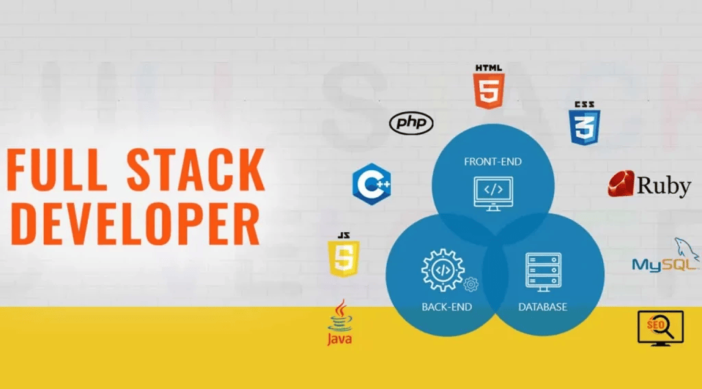

1. Fullstack là gì? Thế nào là lập trình viên fullstack?

Khái niệm fullstack là gì?
Xét trong lĩnh vực công nghệ, nhắc tới fullstack chính là nói đến hàng loạt các công nghệ cần có để có thể hoàn thiện được một dự án. Fullstack developer (lập trình viên fullstack) chính là những người có khả năng làm việc cả trên back-end, front-end lẫn database, hệ thống, bảo mật, server,...
Thế nào là lập trình viên Fullstack?
Tuy nhiên, nói như vậy không có nghĩa là một lập trình viên fullstack cần phải giỏi trong tất cả các lĩnh vực trên mà họ chỉ là những người hiểu rõ nhất về những công nghệ cần có cho dự án và các công việc mà mình đang làm. Điều đặc biệt là một lập trình viên fullstack hoàn toàn có khả năng update và học hỏi thêm nhiều kiến thức, công nghệ khác khi cần thiết.
Có thể bạn chưa biết, trước năm 2010, rất ít người sử dụng và biết đến khái niệm fullstack trong giới công nghệ thông tin. Nguồn gốc của việc từ này được sử dụng rộng rãi và ưa chuộng là bởi Facebook đưa ra thông báo rằng họ sẽ chỉ tuyển dụng fullstack developer trong sự kiện mã nguồn mở OSCON ((Open Source Software Conference) năm 2012, chính từ đấy, khái niệm fullstack mới dần dần trở nên thông dụng và ngày một được ưa chuộng nhiều hơn.
Công việc của một lập trình viên fullstack là gì?
Thông thường, một lập trình viên fullstack sẽ làm những công việc như:
Đưa ra các giải pháp, khuyến nghị để xây dựng cấu trúc cũng như các ứng dụng theo yêu cầu.
Quản lý các dự án, làm việc với các stakeholder
Viết code backend với nhiều ngôn ngữ lập trình khác như Java, PHP, Python…
Sáng tạo và làm việc trên Front-end, sử dụng nhiều html, CSS, JavaScript,..
Khởi tạo và phát triển cơ sở dữ liệu
Xây dựng các API
Kiểm tra quá trình thử nghiệm ứng dụng
Nâng cấp performance của các ứng dụng
Tham gia vào quá trình xây dựng các tài liệu kỹ thuật. ….